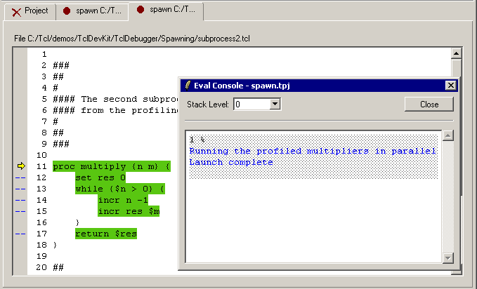

This tutorial shows you how to debug multiple processes by "spawning" new sessions from a main session in the Tcl Dev Kit Debugger. The new sessions are subprocesses of the main session. They are created by setting spawnpoints (similar to breakpoints) in the Tcl Dev Kit Debugger's main window. Then, when you run the debugger, a new tab displaying each spawned subprocess is launched in the Code display area.
/demos/TclDevKit/TclDebugger/Spawning/ beneath the root Tcl Dev Kit
installation directory, and run:
tcldebugger spawn.tpj
The Tcl Dev Kit Debugger will open and load the "spawn" project. The Code display portion of the debugger's main window will show the file "main.tcl".
To debug multiple processes, your script must contain code
similar to that used in this tutorial. (See
Spawning a New Session for more
information about modifying a script.) You must include proc spawn
as well as a spawn command for each subprocess that you want to
generate. The script used here launches two new sessions, "subprocess1.tcl" and
"subprocess2.tcl".
In addition to including the spawn commands described in Step Two,
you must set spawnpoints that tell the debugger when to launch a new session.
For the purpose of this tutorial, spawnpoints (indicated by green arrows) have
been preset in the project file at lines 23 and 24.
Once the script has been modified and spawnpoints have been set, you can run the Tcl Dev Kit Debugger and spawn subprocesses.
Select Debug|Run. The Tcl Dev Kit Debugger automatically launches Code display tabs showing the subprocesses specified in Step Two. Details of the spawn are shown in the Eval Console. Note that the main session and the two subprocesses run in parallel.
Notice that the focus in the
Tcl Dev Kit Debugger's main window has
shifted to the tab containing the code for "subprocess2.tcl". The yellow arrow
indicates that the Tcl Dev Kit Debugger is stopped at the first executable
command (proc multiply) on line 11.
To debug the subprocess2.tcl session: